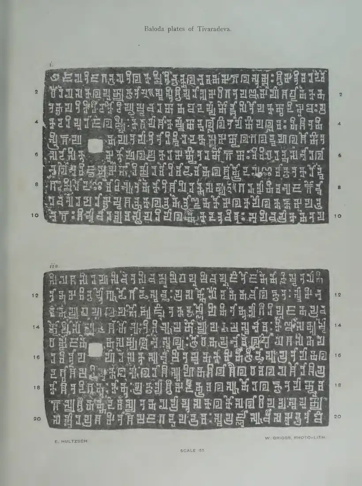
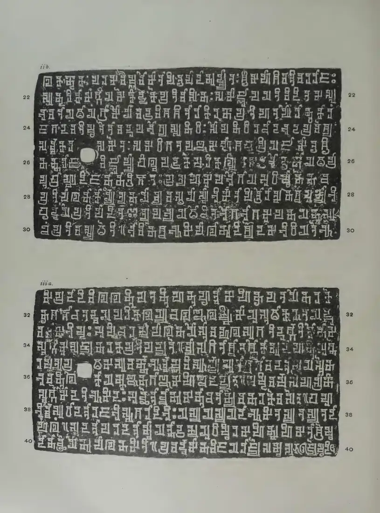

Baloda plates of Tīvaradēva
BALODA PLATES OF TIVARADEVA.
By E. HULTZSCH, PH.D.
These copper-plates were sent to me in January 1902 by Mr. A. B. Napier, I.C.S., on special duty in the office of the Commissioner of Settlements and Agriculture, Nâgpur, before whom they had been produced in an enquiry into the succession to an estate. They “belong to one Ude Singh, a resident of Baloda in the Phuljhar Zamindari of the Sambalpur district” of the Central Provinces.
1 In line 25 the writer has really written mabôdayêna, not mahôdayêna.
2 In tênêththaâm (for tênêththaâm), l. 10, the writer or engraver has used the subscript sign for tâ also for the first th. For the sva of sva-gôtram, l. 24, he had originally put stha, but the back of the paper-impression seems to shew that this stha has been altered to sva.
The plates are three in number and measure about in breadth and about in height. Their edges are not raised into rims. The first plate is engraved only on the inner side, and the second on both sides. The third plate is full of writing on the inner side and bears one additional line, which records the name of the engraver, a little above the middle of the outer side. Some of the lines on the inner side of the third plate are so deeply cut that they show through on the outer side. The writing is on the whole in a state of very good preservation. In the syllable nai of l. 10, a square hole was cut into the plate by the engraver and a fresh piece of copper inserted into the hole. This was probably done in order to correct the syllable nai, which may have been spoiled accidentally in the original engraving. On the left side of each plate is bored a roughly square hole for a ring to connect them. The ring, which had not yet been cut when the plates reached my office, is about in diameter and about in thickness. Its ends are secured in the lower part of a circular seal, which measures in diameter and closely resembles the seal of the Râjim plates of the same king.1 The seal bears, in relief on a deep countersunk surface, across the centre a legend in two lines; at the bottom a floral device; and at the top a figure of Garuđa, facing the front and somewhat worn, with a chakra on his proper right and a saṅkha on his proper left.
The alphabet is of the same box-beaded type as in the Râjim plates. The jihvâmûliya occurs in l. 36, and the secondary form of jh in ujjhita (l. 13). No distinction is made between the secondary forms of ri and rî (in bhôktrînâm, l. 26), and between d and dh (in gâdhô gâdhaâm, l. 12). In ten instances (kiriṭa, l. 3; lakshmî, ll. 4 and 32; tyâgî, l. 13; kâminî-krîdâsu, l. 16; śrî, ll. 18, 19, 21; sâchî, l. 20) the secondary form of i is marked by a point in centre of the mark for i; but in the majority of cases the i is not distinguished from the i. The r of śrî (ll. 1, 2, 18, 19, 21, 25) has the same shape as the secondary form of ri. Final t occurs in sampat (l. 8), dadyât (l. 36) and vasêt (l. 37), and final m in kritâm (l. 2). In l. 40 we have the numerical symbols for 7, 9, and 20.
The language is Sanskrit, mostly prose; but there is one verse on the seal and another in l. 1 f., and six verses from the Smrîtis are quoted in ll. 30-40. As in the Râjim plates, the vernacular form samvatsaru occurs in l. 40. As regards orthography, v is used instead of b in vahala (l. 5) and Indravala (l. 18), and b instead of v in bapushi (l. 11) and abhibriddhayê (l. 28 f.). The anusvâra before ś is changed into n̄ in nistriñša (l. 4 f.), vañśasya (l. 18 f.), triñšataħ (l. 27), and nrišañšâ for nrišañsâh (l. 32). Between a vowel and r, t is always doubled, except in ch=âtra, l. 34; in jagatraya (l. 1) tra is used for ttra, and in êtadvaya for êtad=dvayaâm (l. 32) dva is used for ddva.
Like the Râjim plates, this inscription records a grant by Tîvaradêva, as he is called on the seal and in the opening verse, or Mahâśiva-Tîvararâja (l. 21). On the seal he is styled 'sovereign of Kôsala,' and in l. 19 he is stated to have "acquired the sovereignty of the whole of Kôsala."2 He was the son of Nannadêva of the family of Pânđu, and the grandson of Indrabala (l. 18 f.). Nannadêva and his father Indrabala, who was a son of Udayana of the lunar race, are mentioned also in an inscription at Sirpur, which has been published by Professor Kielhorn,3 who has also found the names of Udayana of the Pânđava family, and perhaps of Indrabala, in a fragmentary inscription of the Nâgpur Museum.4 According to the same scholar, Tîvaradêva must be assigned to about the middle of the eighth century of the Christian era.5
1 Dr. Fleet's Gupta Inscriptions, Plate xlv.
2 This epithet seems to have been omitted accidentally by the engraver of the Râjim plates (l. 16), where prâptaħ corresponds to prâpta-sakala-Kôsal-âdhipatyah in the Baloda plates (l. 19).
3 Ind. Ant. Vol. XVIII. p. 179. In l. 4 of this inscription, I would correct Nannêsvar-âkhyô into -âkhyair=; compare e.g. Narêndrêsvara in South-Ind. Inscr. Vol. I. p. 38 and note 2.
4 Above, Vol. IV. p. 257.
5 Above, Vol. IV. p. 258.
Tīvaradēva's edict was issued from Śripura (l. 2), which Dr. Fleet has identified with the modern Sirpur,1 and is dated on the 27th day of the month Jyaishṭha in the 9th year of his reign (l. 40), i.e. about two years after the Rājim plates. The king granted the village Menkidāka in the district of Sundarikāmārga (l. 22) for the benefit of a rest-house (sattra) which had been established at Bilvapadraka at the request of his son-in-law Nannarāja (l. 25 f.). I am unable to identify the geographical names mentioned in the preceding sentence.
TEXT.2
First Plate.
- 1 श्री3 [॥*] जयति 4जगत्रयतिलकचितिभृत्कुलभवनमङ्गलस्तम्भः [*] श्रीमत्ती-वरदेवो
- 2 धीरेय[:*] सकलपुण्यकृताम् ॥ [१.*] स्वस्ति श्रीपुरात्ममधिगतपञ्चमहाशब्दा-नेकन-
- 3 तनृपतिकिरीटकोटिष्टष्टचरणनखदर्पणोज्ञासितोपकण्ठदिष्कुखः प्र-
- 4 कटरिपुराजलक्ष्मी(:)केशपाशाकर्षणदुर्ललितपाणिपल्लवः5 निशितनि-
- 5 6स्त्रिङ्गघनघ[१*]तपातितारिद्विरदकुभ्ममण्डलगलदहलशोणित-7
- 6 सटासिक्तमुक्ताफलप्रकरमण्डितरणाङ्गणः8 विविधरत्नसंभारला-
- 7 भलोभविजृम्भमाणारिक्षारवारिवाडवानलश्चन्द्रोदय इवाकृतकरोद्दे-
- 8 गः क्षीरोद इवाविर्भूतानेकातिशायिरत्नसम्पत् ॥ गरुत्मानिव भुजङ्गोडा-
- 9 रचतुर[:*] परामृष्टशकुलक्षनेकाञ्जनकोमलकपोलकुङ्कुमपक्ष-
- 10 भङ्गः शिष्टाचारव्यवस्थापरिपालनैकदत्तचित्तः [*] अपि च प्राक्तने तप-
Second Plate; First Side.
- 11 सि यशसि रहसि चेतसि चक्षुषि बपुषि9 च पूजितो जनेनाक्लिष्टतया नि-
- 12 तान्तमवितृमी गूढो गाढं स्वच्छः प्रसन्नो यौवनेन चालङ्कृतः10 स्वामी भ-
- 13 11वनप्यबहुलपनोनुज्मितकुतृष्णोपि नितान्तत्यागी रिपुजनप्रच-
- 14 ण्डोपि सौम्यदर्शनो भूतिविभूषणोप्यपरुषस्वभावः [*] किञ्चासन्तुष्टो
- 15 धर्मार्जने12 न सम्पन्नामे स्वल्पः क्रोध13 न प्रभावे लुब्धो यशसि न प-
- 16 रवित्तापहारे सक्त[:*] सुभाषितषु14 न कामिनीक्रीडासु प्रतापानल-
- 17 दग्धाशेषरिपुकुलतूलराशिस्तुहिनशिलाशैलधवलयशोराशिप्र-
- 18 काशितदिगन्तः कान्तः प्रकृत्या 15श्रीमदिन्द्रवलसूनोरलङ्कृतपाण्डुव-
Plate 1 is bound after this page.
Plate 2 is bound after this page.
19 ङ्गस्य1 श्रीनन्नदेवस्य तनय[:*] प्राप्तसकलकोसलाधिपत्यः स्वपुण्य-
20 सम्भारप्रशमिताशेषजगदुपद्रवः स्वप्रज्ञासूचोसमुद्रुताखि-
Second Plate ; Second Side.
21 लकण्टकः परमवैष्णवो मातापितृपादानुद्ध्यातः श्रीमहाशिवत्तीवरराजः2
22 सुन्दरिकामार्गीयमेङ्गिङ्के प्रतिवासिनः समाज्ञापयति [*] विदितमस्तु
23 भवता3 यथायं ग्रामो यावद्रविशशिताराक्रिरणप्रतिहतघोरान्धकारं
24 जगदवतिष्ठते तावदुपभोग्यस्सनिधिः सोपनिधिरचाटभटप्रवेश्यः
25 सर्वकरसमेतः समभिगतपञ्चमहाशब्दप्रियजामातृश्री-
26 नन्नराजविज्ञ(१)स्या विख्पद्रके परिकल्पितस[च]भोक्तृणां यथ[१*]प्रा-
27 सब्राह्म[ण*]दिजनाना4 त्रिङ्गतः प्रत्यहमुपभोगाय अधिष्ठानेन च
28 प्रतिपालना 5कार्यैत्यनया व्यवस्थयास्माभिर्म[१*]तापित्तोरात्मनश्च पुण्याभि-
29 बृद्धये6 प्रतिपादित इत्युप[ल*]भ्य यथोचितभोगभागमुपनयन्त[:*] सु-
30 खं प्रतिव[त्स्य]र्थेति ॥ भाविनश्च 7भूमिपालानुदिश्येदमभिधीयते [*] भू-
Third Plate ; First Side.
31 मिप्रदा दिवि ललन्ति पतन्ति हन्त हृत्वा मही8 नृपंतयो नरके
32 नृशङ्का[:9 *] एतद्दय10 परिकलय्य चलाञ्च लक्ष्मीमायुस्तथा कुरुत यज्ञ-
33 व[त]ामभीष्टः11 [॥ २*] अपि च [*] रक्षापालनयोस्तावत्फल12 सुगति-
दुर्गती [*] को नाम
34 स्वर्गमुत्सृज्य नरक13 प्रतिपद्यते ॥ [३*] व्यासगीताश्चात्र14 श्लोकानुदाह-
[र*]न्ति [*] अग्ने-
35 रपत्य15 प्रथम सुवर्णं भूर्वष्णवी सूर्य[सुताश्च] गाव[ः *] दत्त[१]स्त्रयस्तेन
36 भवन्ति लोका यङ्ग[१*]ञ्चन16 गाञ्च महीञ्च दद्यात् ॥ [४*] षष्टिवर्ष-
सहस्राणि
37 स्वर्गं मोदृति भूमिदः [*] 17अच्छेत्ताञ्चानुमन्ता च तान्येव नरके
वसेत् ॥ [५*] बहु-
38 भिव्वंसुधा दत्ता र[१*]जभिस्सगरादिभिः
तस्य18 तस्य तदा
| 1 Read °वंशस्य. | 2 Read °श्रिवतीवर°. |
| 4 Read °जनानां त्रिंशतः. | 5 Read कार्येत्य°. |
| 7 Read °नुद्दिश्ये°. | 8 Read महीं. |
| 10 Read एतद्द्वयं. | 11 Read °भीष्टं. |
| 15 Read नरकं. | 14 Read °गीतांश्चात्र. |
| 16 Read °च्चनं. | 17 Read प्राच्छेत्ता चागु°. |
[1*] यस्य यस्य यदा भूमि-
१ Read भवतां.
६ Read °वृद्धये.
१ Read नृशंसाः.
१२ Read °त्फले.
१३ Read °पत्यं प्रथमं सुवरणं भूर्व्वेष्ववी.
१४ Read भूमिस्तस्य.
39 फलं ॥ [६*] स्वदत्ता1 परदत्ताम्वा यत्नाद्रक्ष युधिष्ठिर [1*] मही-
न्महीमता2 श्रेष्ठ
40 दानाच्छेयोनुपालनमिति ॥ [७*] प्रवर्द्धमानविजयराज्ये सम्बत्सर्3 ८
ज्येष्ठ दि २० ७ [॥*]
Third Plate ; Second Side.
Seal.
1 श्रीमत्तीवरदेवस्य कोसल[ा]धिपतेरि[दं] [1*]
2 शंस[नं] ध[र्म]वृ[द्ध्यर्थ] 6स्थितमाचन्द्रत[ा]र[कं] [॥ ८*]
TRANSLATION.
Om. (Verse 1.) Victorious is the glorious Tivaradēva, the foremost of all performers of meritorious acts, (and) the auspicious pillar (supporting) the mansion— the family of kings (who are) ornaments of the three worlds.
(Line 2.) Hail! From Śripura,— he who illuminates the neighbouring regions by the mirror of the nails of (his) feet, which are rubbed by the edges of the diadems of many bowing princes who have obtained the five great sounds; whose sprout-like hand rudely pulls the abundant hair of the goddess of Fortune of kings (who are his) declared enemies; who adorns the battle-field with heaps of pearls, which are drenched with copious streams of blood (and) which drop from the round temples of hostile elephants, struck down7 by the heavy blows of (his) sharp sword; (who is) the submarine fire to the ocean of (his) enemies, swelling with the desire of acquiring a mass of various gems; who does not cause distress by (heavy) taxes, just as the rising moon does not cause distress by (hot) rays; who, like the milk-ocean, displays a wealth of many surpassing jewels; who is skilled in uprooting the wicked, just as Garuḍa is skilled in picking up snakes; who, (by making them widows), wipes away the collyrium below the eyes, and the saffron marks on the tender cheeks, of the wives of (his) enemies; whose mind is bent exclusively on maintaining the rules of good conduct;
(L. 10.) who, moreover, is spontaneously worshipped by men on account of (his) penance, performed in a previous birth; who is quite insatiable in (acquiring) fame; who is very reserved in (keeping) secrets; who is quite pure in mind; whose eyes are pleasant; and whose body is ornamented with youth; who, though he is a master (svāmin), does not talk much (while the god Svāmin, i.e. Kārttikēya, has many, viz. six, faces);8 who, though not free from the desire
1 Read स्वदत्तां परदत्तां वा.
2 Read महीमहीमतां.
3 The ru of सम्बत्सर् seems to be engraved on an erasure and differs from the ru occurring in ll. 8, 14 and 32; but in the corresponding passage of the Rājim plates (l. 36) the ru is quite distinct.
4 Read उत्कीर्णमाक्०.
5 The visarga here represents a full stop.
6 The photo-lithograph of the seal of the Rājim plates also reads स्थित०, while the printed text (Gupta Inscr. p. 294) has स्थित०.
7 I do not consider it absolutely necessary to alter pditta into pditta, as proposed in Ind. Ant. Vol. XVIII. p. 2: 0.
8 Lapana means both 'talking' and 'the mouth.'
for (conquering) the earth (ku),1 is very liberal; who, though very fierce to enemies, is of gentle2 aspect; who, though adorned with majesty (bhúti), is not cruel in disposition (while Śiva is both smeared with ashes (bhúti) and cruel in disposition);
(L. 14.) who, moreover, is never satisfied in acquiring merit, but the contrary in accumulating wealth; who is devoid of anger, but not of power; who is covetous of fame, but not of taking the property of others; who is fond of clever remarks, but not of playing with women; who by the fire of (his) valour burns the families of all (his) enemies (like) heaps of cotton; who by the mass of (his) fame, white as the mountain of ice, illuminates the quarters; who is handsome by nature;
(L. 18.) the son of the glorious Nannadéva,— (who was) the son of the glorious Indrabala (and) adorned the race of Pânđu,— the glorious Mahâśiva-Tivararâja, who has acquired the sovereignty of the whole of Kôsala; who by the abundance of his merit has allayed all the calamities of the world; who has removed all thorns (or small enemies) with the needle of his wisdom; (who is) a devout worshipper of Vishnu; (and) who meditates on the feet of (his) mother and father,— issues (the following) command to the inhabitants of Meñkiđdaka, which belongs to (the district of) Sundarikâmârga:—
(L. 22.) “Be it known to you that, for the increase of the merit of (cur) mother and father and of ourselves, we have granted this village, to be enjoyed as long as the world endures, in which terrible darkness is dispelled by the rays of the sun, the moon and the stars; together with treasures; together with deposits; not to be entered by regular or irregular troops; accompanied by all taxes; in order to feed daily thirty Brâhmaṇas or other men who happen to arrive (and) who use the rest-house established at Bilvapadraka at the request of (our) beloved son-in-law, the glorious Nannarâja, who has obtained the five great sounds; and under the condition that (this charity) has to be maintained by the (local) authority.3
(L. 29.) “Knowing this, you shall dwell in happiness, delivering (to the sattra) the proper share of the enjoyment.”
(L. 30.) And the following is addressed to future rulers of the earth.
[Here follow two of the customary verses.]
[L. 34.] And with reference to this they quote (the following) verses sung by Vyâsa.
[Here follow four other verses.]
(L. 40.) The year 9 in the increasing reign of victory; the 27th day of Jyêshṭha.
(L. 41.) (This edict was) engraved by Boppanâga, the son of the goldsmith4 Sottranâga.
Seal.
(V. 8.) This edict, the object of which is the increase of merit, of the glorious Tivaradéva, the sovereign of Kôsala, (shall) endure as long as the moon and the stars.
1 In order to understand the virbđha, the primary meaning of ku-trishnâ, viz. ‘mean greed,’ must be also kept in mind.
2 Saumya means also ‘moon-like,’ while the word prachanda, ‘very fierce,’ hints a comparison with the sun (chandâmîu).
3 Or, perhaps, ‘by the town (of Bilvapadraka).’ The meaning of adhishthâna is doubtful.
4 Árkasálika is a Sanskrit form of the Kanarese akkasáliga or akkasâle (above, Vol. III. p. 213), ‘a goldsmith,’ which Dr. Kittel (Kannada-English Dictionary, s.v. aka, 2) derives from arka, ‘metal.’ In the Eastern Gaṅga copper-plates we find the Prâkrit form akhas[â]lin (above, Vol. III. p. 19) and the (apparently erroneous) Sanskrit forms akshasâlin (Ind. Ant. Vol. XVIII. p. 145) and akshasâlika (ibid. Vol. XIII. p. 123). The arkasâlika has to be distinguished from the akshapatalika, an officer who wrote grants, but did not engrave them; see above, Vol. IV. pp. 126 and 128, and compare ibid. pp. 121, 129 and 210. Professor Bühler’s and Monsieur Senart’s remarks (Indische Palæographie, p. 94 f., and p. 69 above) have to be modified in accordance with this result.

